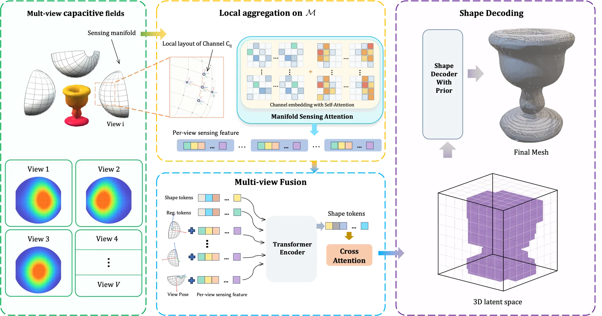
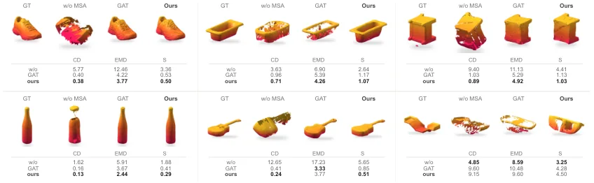
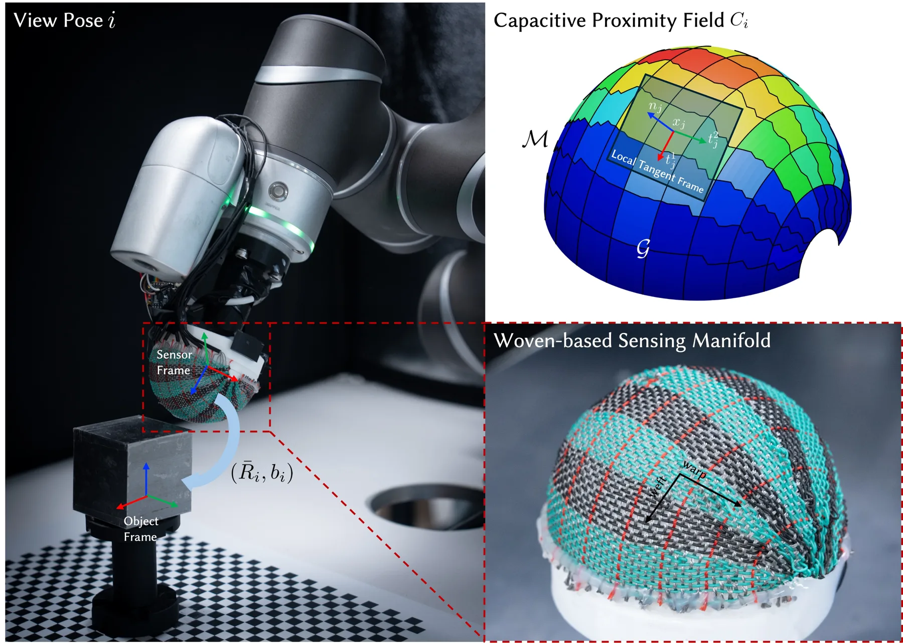
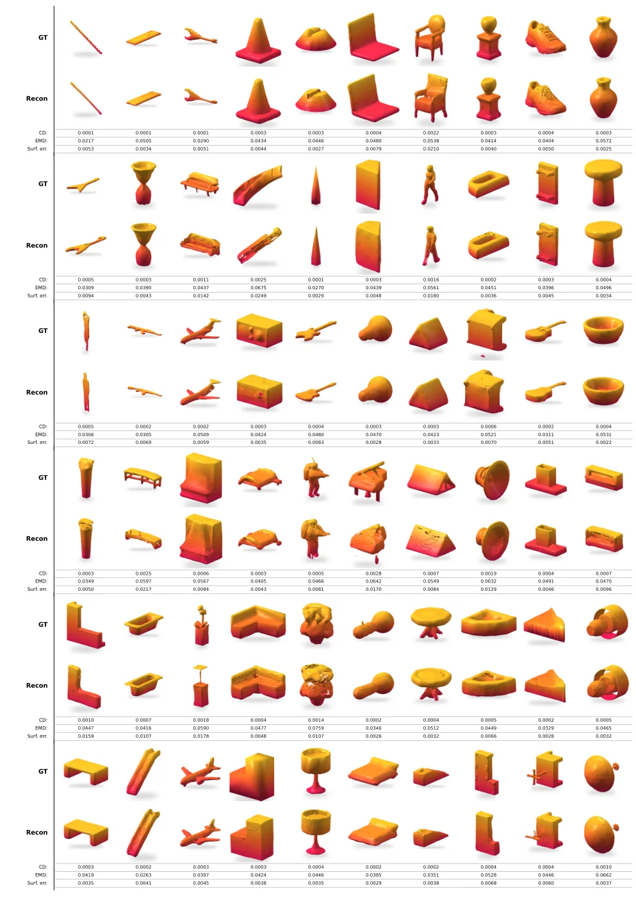
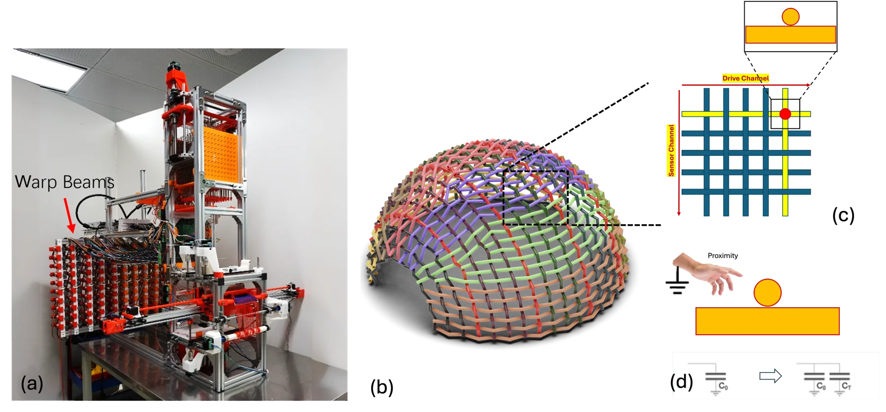
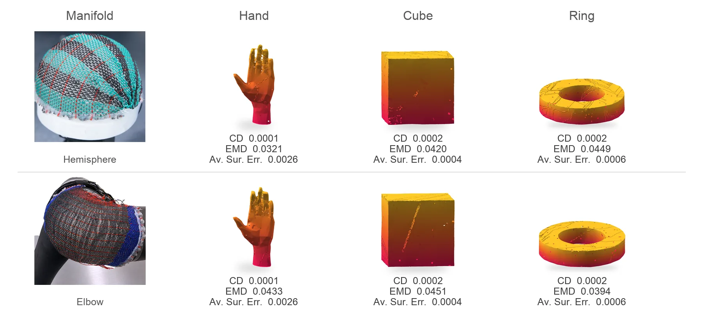

Proximity3D：基于传感流形电容邻近信号的形状重建Proximity3D: Shape from Capacitive Proximity on Sensing Manifold
命中 Geometry Foundation Models 且具有明确 robotic near-field sensing 价值；官方 HTML 提供仿真、物理对象、MSA 消融、OOD 形状和抓取规划数字。
一句话工作总结
把机器人本体的非接触近场电容感知转化为可用于形状恢复和抓取规划的几何观测。
完整单篇海报（待补全）
当前记录尚未达到完整海报质量门槛，暂不把摘要或评分理由冒充方法/实验结论。
待补字段：方法本质拆解.note、evidence_sources、研究上下文.authors、研究上下文.lineage、研究上下文.network。下一次任务需从论文全文或官方 HTML 提取证据后再发布。
摘要
Proximity3D 将弯曲电容纺织物视为非平面 sensing manifold，从多视角稀疏电容邻近场前馈恢复物体三维形状。Manifold Sensing Attention 注入局部切平面几何，预训练 TRELLIS-2 shape decoder 提供形状先验，并通过 surrogate forward model 扩大训练数据。
Most shape reconstruction methods assume measurements defined over planar sensing domains, such as RGB images or depth maps. In this paper, we use a curved capacitive textile as a shape sensor, treating its surface as a non-planar sensing manifold. Each scan is represented as a capacitive proximity field on this manifold, induced by the interaction between the curved electrode layout and nearby object geometry. We introduce a multi-view feedforward reconstruction model that aggregates these fields across known sensor views and recovers the observed object shape. Simulated and physical experiments demonstrate robust reconstruction from capacitive proximity signals acquired on curved sensing surfaces, pointing toward a new route to robotic near-field geometric awareness via embodied sensing.
中文解读摘录
- 领域：Geometry Foundation Models / 3D Foundation Models；RPC 相机、绝对高程、gauge 与不确定性融合。
- 要点：沿原生 RPC 高度射线适配冻结 VGGT，把 ray-field observability、height–datum gauge 和多源 relief fusion 分开处理。26 个 US3D tiles 上 absolute MAE 为 2.99 m、coverage 为 91.9%、PAGc@2.5 m 为 72.6%，并支持 0/1/10 个控制高度。
- 判断：最贴近可靠状态估计底座的一篇：把传感器模型的不可观测低阶自由度显式化，再用控制和校准不确定性处理可辨识范围。
图表/页面预览
{kind=link}

{kind=link}

{kind=link}

{kind=link}

{kind=link}

{kind=link}
